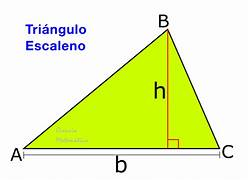

Un triángulo escaleno es la forma más general de triángulo, de ahí que las consideraciones que sobre este tipo de triángulos se puedan hacer son las que sobre triángulos en general se pueden hacer.
Un triángulo es un polígono cerrado de tres segmentos, cada uno de estos segmentos que forman el polígono es un lado del triángulo, y el punto donde se cortas dos lados es un vértice.
Los vértices se nombran con una letra mayúscula en sentido contrario a las agujas del reloj: A, B, C. Los lados se nombran con una letra minúscula igual a la del vértice opuesto: a, b, c. Los ángulos se nombran con una letra griega en el mismo orden que los vértices: {\displaystyle \alpha ,\;\beta ,\;\gamma .}
Un triángulo escaleno puede ser acutángulo, rectángulo u obtusángulo según sus ángulos.
